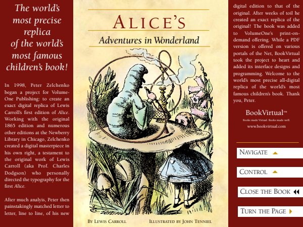

EPUB Browser
Shelf
Annotations
English
English
简体中文
繁體中文
한국어
日本語
Español
Deutsch
Français
Русский
Italiano
Português (Brasil)
العربية
Bahasa Indonesia
हिन्दी
Tiếng Việt
ไทย
Bahasa Melayu
Theme

PDF
Alice's Adventures in Wonderland
Lewis Carroll & BkV0000010 & Bkslr0000001 & ISBN
Carroll
Alice
Wonderland
children's
1865
v.1.2
Start reading
Clear
Add to Shelf
Table of contents
Total: 105
Page 1
Jacket Cover
chapter_0.html
Page 2
chapter_1.html
Page 3
Title Page
chapter_2.html
Page 4
chapter_3.html
Page 5
chapter_4.html
Page 6
Table of Contents
chapter_5.html
Page 7
CHAPTER I. DOWN THE RABBIT-HOLE.
chapter_6.html
Page 8
chapter_7.html
Page 9
chapter_8.html
Page 10
chapter_9.html
Page 11
chapter_10.html
Page 12
chapter_11.html
Page 13
chapter_12.html
Page 14
CHAPTER II. THE POOL OF TEARS.
chapter_13.html
Page 15
chapter_14.html
Page 16
chapter_15.html
Page 17
chapter_16.html
Page 18
chapter_17.html
Page 19
chapter_18.html
Page 20
chapter_19.html
Page 21
CHAPTER III. A CAUCUS-RACE AND A LONG TALE.
chapter_20.html
Page 22
chapter_21.html
Page 23
chapter_22.html
Page 24
chapter_23.html
Page 25
chapter_24.html
Page 26
chapter_25.html
Page 27
CHAPTER IV. THE RABBIT SENDS IN A LITTLE BILL.
chapter_26.html
Page 28
chapter_27.html
Page 29
chapter_28.html
Page 30
chapter_29.html
Page 31
chapter_30.html
Page 32
chapter_31.html
Page 33
chapter_32.html
Page 34
chapter_33.html
Page 35
chapter_34.html
Page 36
CHAPTER V. ADVICE FROM A CATERPILLAR.
chapter_35.html
Page 37
chapter_36.html
Page 38
chapter_37.html
Page 39
chapter_38.html
Page 40
chapter_39.html
Page 41
chapter_40.html
Page 42
chapter_41.html
Page 43
chapter_42.html
Page 44
chapter_43.html
Page 45
CHAPTER VI. PIG AND PEPPER.
chapter_44.html
Page 46
chapter_45.html
Page 47
chapter_46.html
Page 48
chapter_47.html
Page 49
chapter_48.html
Page 50
chapter_49.html
Page 51
chapter_50.html
Page 52
chapter_51.html
Page 53
chapter_52.html
Page 54
CHAPTER VII. A MAD TEA-PARTY.
chapter_53.html
Page 55
chapter_54.html
Page 56
chapter_55.html
Page 57
chapter_56.html
Page 58
chapter_57.html
Page 59
chapter_58.html
Page 60
chapter_59.html
Page 61
chapter_60.html
Page 62
chapter_61.html
Page 63
CHAPTER VIII. THE QUEEN’S CROQUET-GROUND.
chapter_62.html
Page 64
chapter_63.html
Page 65
chapter_64.html
Page 66
chapter_65.html
Page 67
chapter_66.html
Page 68
chapter_67.html
Page 69
chapter_68.html
Page 70
chapter_69.html
Page 71
chapter_70.html
Page 72
CHAPTER IX. THE MOCK TURTLE’S STORY.
chapter_71.html
Page 73
chapter_72.html
Page 74
chapter_73.html
Page 75
chapter_74.html
Page 76
chapter_75.html
Page 77
chapter_76.html
Page 78
chapter_77.html
Page 79
chapter_78.html
Page 80
CHAPTER X. THE LOBSTER QUADRILLE.
chapter_79.html
Page 81
chapter_80.html
Page 82
chapter_81.html
Page 83
chapter_82.html
Page 84
chapter_83.html
Page 85
chapter_84.html
Page 86
chapter_85.html
Page 87
chapter_86.html
Page 88
CHAPTER XI. WHO STOLE THE TARTS?
chapter_87.html
Page 89
chapter_88.html
Page 90
chapter_89.html
Page 91
chapter_90.html
Page 92
chapter_91.html
Page 93
chapter_92.html
Page 94
chapter_93.html
Page 95
CHAPTER XII. ALICE’S EVIDENCE.
chapter_94.html
Page 96
chapter_95.html
Page 97
chapter_96.html
Page 98
chapter_97.html
Page 99
chapter_98.html
Page 100
chapter_99.html
Page 101
chapter_100.html
Page 102
chapter_101.html
Page 103
chapter_102.html
Page 104
COLOPHON
chapter_103.html
Page 105
ON-SCREEN READING TIPS
chapter_104.html
Top
Add Group
Add Book
Export
Import
Bookshelf
Add Group
Add Book
Rename
Delete Group
Group